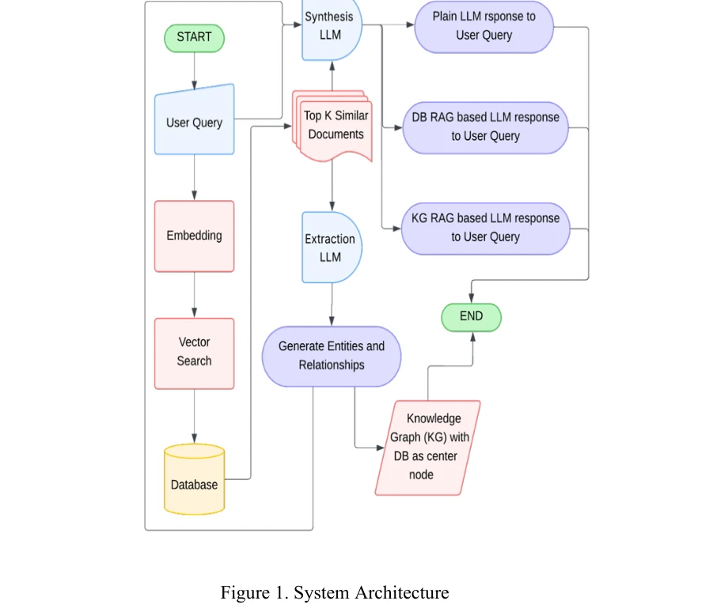

저자: A. R, Aman Fayazahmed Soudagar, Swetha M D | 날짜: 2026 | DOI: 10.1109/IITCEE67948.2026.11394480

Fig. 1.
본 논문은 RAG 기반 연구 평가 시스템에서 Vector RAG, Knowledge Graph RAG, Plain LLM 세 가지 아키텍처를 비교 분석하고, 고전적 방식의 한계를 극복하기 위해 QNLP 모듈을 통합한 하이브리드 프레임워크를 제안한다.
Fig. 1.
총평: 본 연구는 RAG 기반 연구 평가 시스템의 구체적 한계를 규명하고 양자 기반 해결책을 제안한 점에서 의의가 있으나, QNLP 모듈의 구체적 구현과 성능 평가가 불충분하여 제안된 하이브리드 프레임워크의 실질적 효과를 검증하기 어렵다.